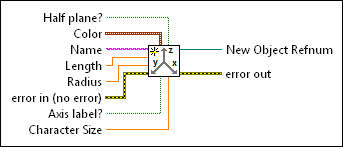
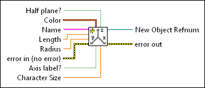

Create 3D Axis VI
Owning Palette: Geometries VIs
Requires: Full Development System
Creates an x, y, and z axis object to define 3D space in a scene.
 Add to the block diagram Add to the block diagram |
 Find on the palette Find on the palette |
Owning Palette: Geometries VIs
Requires: Full Development System
Creates an x, y, and z axis object to define 3D space in a scene.
| Add to the block diagram |
Find on the palette |
 |
Half plane? specifies whether to use both sides of the axis boundary. The default is TRUE, which specifies to use a half plane. | ||||||||
 |
Color specifies the color of the object in RGBA format. Color accepts a cluster of numeric values 0 through 1, where 0 represents the absence of the red, green, or blue color and 1 represents a full saturation of the color. The alpha value indicates the transparency of the red, green, and blue colors.
| ||||||||
 |
Name specifies the name of the axis object. | ||||||||
 |
Length specifies the length of the axis in coordinate units. The default is 2. | ||||||||
|
Radius specifies the radius of the axis in coordinate units. The default is 0.01. | ||||||||
 |
error in describes error conditions that occur before this node runs. This input provides standard error in functionality. | ||||||||
|
Axis label? specifies whether to display axis labels. The default is FALSE. | ||||||||
|
Character Size specifies the height of the axis label text characters in coordinate units. For example, set character size to 1 to create an axis label equal in height to a geometric object with a height of 1. The default is 0.5. | ||||||||
 |
New Object Refnum returns the reference to the object. | ||||||||
 |
error out contains error information. This output provides standard error out functionality. |